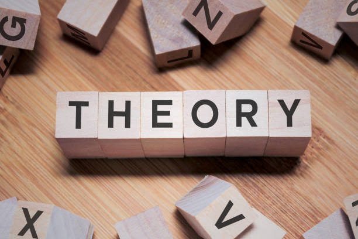
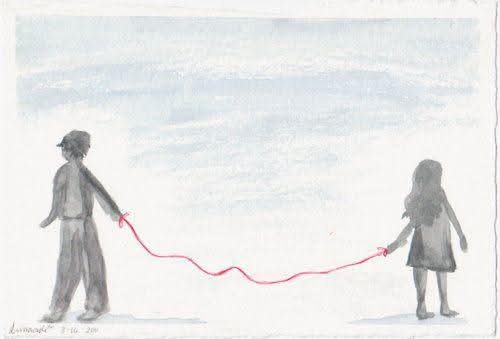
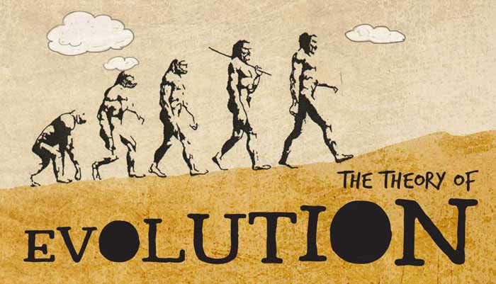

Daia
Unlock Your Potential: Dive Into The World of Theories
Dive Into a Transformative
Journey with DAIA!
Designed to inspire critical thinking, collaboration, and creativity, its your chance to unlock your potential and make a meaningful impact.

The red
string of fate.

We all are always looking for the destined one for us. What if we tell you that you do not have to look for that special someone because you are bound to that person with a "Red String".
In many cultures, there are different definitions of fate. One of them is the red string of fate also commonly known as the red string of marriage. In Chinese culture, there is a myth.
Red String Theory
The Red Thread of Fate, also referred to as the Red Thread of Marriage, and other variants, is an East Asian belief originating from Chinese mythology.It is commonly thought of as an invisible red cord around the finger of those that are destined to meet one another in a certain situation as they are "their one true love".
According to Chinese legend, the deity in charge of "the red thread" is believed to be Yue Xia Laoren, often abbreviated to Yue
Lao , the old lunar matchmaker god, who is in charge of marriages.In the original Chinese myth, the thread is tied around both parties' ankles, while in Japanese culture it is bound from a male's thumb to a female's little finger. Although in modern times it is common across both these cultures to depict the thread being tied around the fingers, often the little finger. The color red in Chinese culture symbolises happiness and it is also prominently featured during Chinese weddings.
The two people connected by the red thread are destined lovers, regardless of place, time, or circumstances. This magical cord may stretch or tangle, but never break. This myth is similar to the Western concept of twinflame or a destined partner.
The Mystery
of Life.
Reincarnation, also known as rebirth or transmigration, is the philosophical or religious concept that the non-physical essence of a living being begins a new life in a different physical form or body after biological death.In most beliefs involving reincarnation, the soul of a human being is immortal and does not disperse after the physical body has perished. Upon death, the soul merely becomes transmigrated into a newborn baby or an animal to continue its immortality. The term transmigration means the passing of a soul from one body to another after death.
Reincarnation (punarjanman) is a central tenet of the Indian religions such as Hinduism, Buddhism, Jainism, and Sikhism. In various forms, it occurs as an esoteric belief in many streams of Judaism, certain pagan religions including Wicca, and some beliefs of the Indigenous peoples of the Americas and Aboriginal Australians (though most believe in an afterlife or spirit world).A belief in the soul's rebirth or migration (metempsychosis) was expressed by certain ancient Greek historical figures, such as Pythagoras, Socrates, and Plato.
Although the majority of denominations within Abrahamic religions do not believe that individuals reincarnate, particular groups within these religions do refer to reincarnation; these groups include the mainstream historical and contemporary followers of Cathars, Alawites, Hassidics, the Druze,Kabbalistics, Rastafarians, and the Rosicrucians. Recent scholarly research has explored the historical relations between different sects and their beliefs about reincarnation. This includes the views of Neoplatonism, Orphism, Hermeticism, Manichaenism, and Gnosticism of the Roman era, as well as those in Indian religions. In recent decades, many Europeans and North Americans have developed an interest in reincarnation, and many contemporary works mention it.
The Engine
of Life.

The theory of evolution is a scientific theory that explains how organisms change over time. It states that organisms produce more offspring than can survive in their environment, and that the fittest organisms are more likely to reproduce and pass on their traits to the next generation. This process is called natural selection, and it's what causes evolution to occur.
Here are some key points about the theory of evolution:
Evolution is gradual
Evolution usually takes thousands to millions of years to occur, and happens slowly over time. This is called gradualism.
Evolution can also happen in bursts
Evolution can also happen in shorter bursts with periods of no change, called punctuated equilibrium.
Evidence for evolution
Evidence for evolution includes fossils, homologous structures, and DNA sequences.
DNA similarities indicate relationships
Organisms that are more closely related have more similar DNA. For example, humans and chimpanzees are more closely related than either species is to gorillas.
Charles Darwin and Alfred Russel Wallace
Charles Darwin and Alfred Russel Wallace proposed the theory of evolution by natural selection in the nineteenth century.
The Measure
of Reality.
In mathematics, dimension theory is the study in terms of commutative algebra of the notion dimension of an algebraic variety (and by extension that of a scheme). The need of a theory for such an apparently simple notion results from the existence of many definitions of dimension that are equivalent only in the most regular cases (see Dimension of an algebraic variety). A large part of dimension theory consists in studying the conditions under which several dimensions are equal, and many important classes of commutative rings may be defined as the rings such that two dimensions are equal; for example, a regular ring is a commutative ring such that the homological dimension is equal to the Krull dimension.
The theory is simpler for commutative rings that are finitely generated algebras over a field, which are also quotient rings of polynomial rings in a finite number of indeterminates over a field. In this case, which is the algebraic counterpart of the case of affine algebraic sets,4 most of the definitions of the dimension are equivalent. For general commutative rings, the lack of geometric interpretation is an obstacle to the development of the theory; in particular, very little is known for non-noetherian rings. (Kaplansky's Commutative rings gives a good account of the non-noetherian case.)

Daia
fftrdfggcyycycyy ycjcyxtf tshcuxtxy ufucuvj gshshhshs hshshshshhs jsusvhshsushshs hshshshhsis jsushsus hhhg